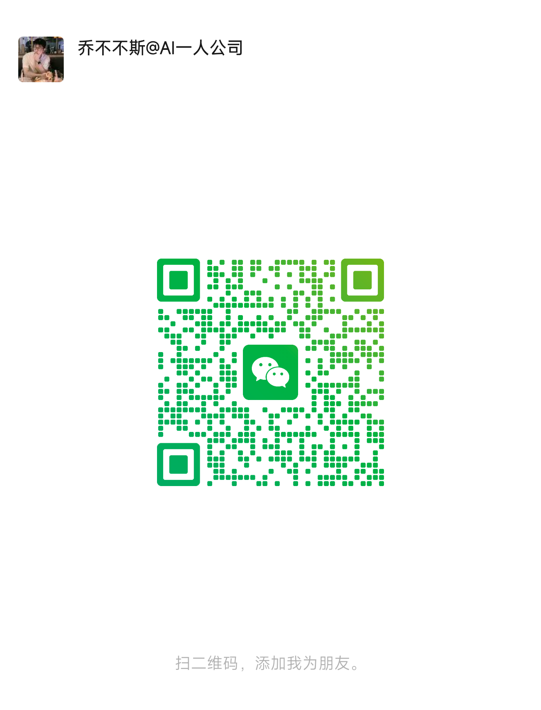

11月活动 / AI一人公司起盘套装 · 两天线上公开课
一个人，也可以把自己的本事做成一门生意
工作做了不少，也积累了一些本事。可当我开始想做自己的事业时，还是答不上来：离开原来的岗位，谁会需要我？我能为他解决什么问题？他又为什么愿意付费？
一年前，我就在找这个答案。
那时，AI围绕我的履历，给过我一个挺合理的建议：帮助产品经理找副业方向。
我自己做过产品经理，熟悉这份工作，也正在探索职场之外的可能。从经历到客户，这个推理很顺。但我没有直接接受：我不只想服务产品经理，这个建议也还没有回答，我真正想长期做的是什么。
如果你也在探索自己的事业，可能会卡在其中一处：
- 不知道做什么。 工作做了不少，会的东西也不少，离开岗位却说不清自己能独立提供什么帮助。
- 不知道怎么卖产品。 有方向，有专业，甚至写好了方案，别人还是不明白为什么需要你、该怎样与你合作。
- 不知道怎么找客户。 开始发内容、找人交流，却不知道该找谁聊，怎样让合适的人真正走进来。
- 不知道怎么用好AI。 工具试了很多，方案生成得很快，实际业务却没有跟着往前走。
这些问题，我都遇到过。过去一年，我一步步经历了方向筛选、用户调研、产品设计和第一次发布。到现在，有了自己的自媒体账号，第一次产品发布时，18位线上用户中有7位直接付费，也做出了自己的AI工作方式。当然，还有很多地方在验证，我也在继续调整。
这篇文章，我想把其中几次真正改变判断的过程，以及留下来的方法和工具，完整分享出来。你可以对照自己正在遇到的问题，看当时什么办法没有用、我怎样调整、下一步又是怎样走出来的。
你会看到一条从0到1的业务路径：找方向，理解需求，做出产品，找到客户，进入交付，再用真实反馈调整。 AI会参与其中，但每一步都要回到自己的业务上。
11月14日、15日晚7点，我还会用两天线上公开课，分享这些过程：第一天讲我怎样起盘、获得用户付费，第二天演示怎样用AI选题和写作。读的时候，你可以先记下一处和自己最相关的卡点，带着它来看具体材料和操作。详细安排放在文末。
01｜工作做了不少，却说不清自己能独立卖什么
我最开始也没有一个清楚的答案。
我希望通过自己的方法，帮助别人更好地思考和解决问题。这可以做成咨询、课程、软件，也可以做成硬件。我的履历能支撑一些事情，兴趣又会把我带向另一些事情。只让AI推荐，它能给出很多听起来都不错的方向。
我需要做的是一轮轮商业模式的加减法。
先从自己想实现的生活、已有能力和能投入的资源出发，选大方向。当时我决定先看财富相关的需求、国内的个人用户，以知识服务作为起步方式。
然后，把我想到过、看到过，以及AI结合我的背景提出的商业模式，放进同一个池子。在后来的线上分享里，我回顾过这个过程：池子里有约100个想法，经过意向筛选，先留下5个，再通过调研、判断和与人交流，逐渐做减法。
比如，我看过用AI Agent帮助一个人从创业判断直接走到执行的模式。它很吸引我，但结合当时自己的条件，我没有选择从那里开始。最后，我更想先做的是：自己从职场走向一人公司，在实践里先走一步，帮助正在经历相近问题的人。
这个方向听起来已经合理了，但仍然太宽。
我继续研究国内外的一人公司服务：他们服务谁，解决什么问题，以什么产品承接，怎样获得客户。看完之后，我发现，“帮助职场人转型一人公司”这个说法，还不足以让我真正进入市场。我需要更具体的用户和场景。
于是，我又回到自己的经历，也开始和有转型想法的人交流。有人只是工作不开心，有人已经想改变，有人有方向却没启动，还有人已经开始做，但卡在产品或获客。看清这些差异，才可能进一步决定自己先帮谁。
按两次线上分享中的本人过程整理。每次收窄都带着当时的依据，也保留继续调整的空间。
找到候选方向后，我还补做了行业机会和商业模式预判：这个方向现在有什么机会？它的规模能不能承载我的预期？有没有明显硬伤？下一步最应该验证的前提是什么？
这一段对我最大的帮助，是终于能够解释：我为什么先做这件事，而不是另外四件事；哪些地方只是自己的偏好，哪些地方有用户或市场材料支持。
如果你也不知道自己能卖什么，可以参考的正是这段过程。 你不需要直接照搬我的方向，但可以看我怎样列选择、找依据、做取舍，最后把“我想做点自己的事”变成一个能够继续接触用户的方向。
02｜产品想得很完整，却不知道用户真正需要什么
方向有了，我一开始以为，用户需要的是做IP、做自媒体、找客户。把这些事情做好，他的一人公司应该就能往前走。
围绕这些环节，我可以设计很多服务。但用户究竟想完成什么？他会为什么付费？这些还需要走进真实需求里看。
接下来，我去调研真实用户。在第三次线上分享里，我复盘过这轮工作：自己做了二十多位用户的深度调研，收集了二十多份问卷，还把其他项目的问卷结果作为辅助参考。
找人本身就踩了不少坑。
我试过从一人战队名单里找人，一个个加微信、聊问题。聊了几位以后，发现大家的业务和处境太分散，很难围绕同一个需求继续判断。我也找过通过公众号认识我的用户，但直接邀约深入交流，比找已经有共同学习背景的人困难得多。
后来，我把问卷做成了一个“一人公司路径校准器”。用户先用它看自己的当前状态，我再从回流的信息里理解他们的问题。它帮助我取得了另一类材料，也让我意识到：找到客户的过程，可以从给对方一个与当下问题有关的帮助开始。
反馈也在改变我的产品想法。
问卷里有人更关心“怎样把想法变成具体产品服务”。继续往下聊，我逐渐发现，做IP、做自媒体、找客户，是他们会提到的环节；真正想要的，是把自己的业务从0推到1，获得用户付费，并在这个过程中沉淀一套自己能继续使用的方法论。
我把问卷、访谈和交流记录放在一起，让AI分析。它很快就能给出一份完整报告，但里面的用户任务划分，我并不认可。我自己手打了一版任务地图，再让它回到原始材料里重做。
后面又继续追问：用户现在用什么办法解决？这些办法哪里好、哪里不够？这个任务对他究竟有多重要？如果他已经满意，为什么要换成我？
从调研入口、原始反馈到任务地图与产品内核，依据第三次线上分享整理。
这些调研让我看清了，用户要的结果比我最初设想的更完整。
他们真正需要的是：完成0～1的完整变现，同时沉淀一套属于自己的方法论。
一篇内容、一个IP定位，或者一次找客户的动作，都要放回这条路径里：我为谁解决什么问题，怎样把帮助做成产品，怎样让用户理解并付费，再怎样完成交付、根据反馈继续调整。经历过这轮实践以后，用户还希望知道每一步为什么这样做，下次能够自己判断和推进。
因此，我推出了咨询和陪跑两项服务。
咨询，帮助用户解决眼前的具体问题。 比如已经有产品想法，却说不清用户为什么需要；或者尝试过内容和客户沟通，仍然不知道问题出在哪一步。我们围绕他的真实情况，看材料、拆问题、比较选择，形成能够继续行动的判断。
陪跑，则围绕0～1的完整变现过程持续推进。 从明确方向与需求，到制作产品、接触客户、尝试销售和实际交付，在关键节点一起判断、实操和复盘。同时把过程中的方法、判断依据和有效做法留下来，让用户逐步形成自己的方法论。
我的商业判断、实践经验和AI能力，都用来支持这两种帮助：既推进眼前的业务，也让用户在实践中积累继续做下去的能力。咨询与陪跑的区别，在于要解决的是一个具体问题，还是需要持续走完一段业务过程。
确定了这一点，我才继续制作产品：把服务谁、解决什么问题、怎样合作、具体交付什么写清楚，整理展示材料和服务流程，再通过内容、交流和产品介绍，把它拿到真实用户面前销售。
经过用户调研、了解清楚用户需求后，我制定了核心产品，并做了第一次线上发布。
那次发布面对18位线上用户，其中7位直接付费买单。
对我来说，这一步很关键。它让我把“找方向—研究需求—确定产品内核—制作产品—销售—用户付费—进入服务”这一轮0到1闭环走了下来。产品不再只存在于我的设想和文档里，开始有真实的人带着自己的问题，与我合作。
有了客户以后，我还要继续看：哪些帮助真正被用上，哪里需要调整，怎样控制交付成本。这些反馈又会回到下一轮产品和服务里。
如果你已经写了产品方案，却总觉得卖不动，可以沿着这段过程对照自己。 用户的真实任务、你的具体帮助、别人看得懂的产品说明，以及实际销售，中间有没有哪一步还没有接上？
03｜AI用得越来越多，业务却不一定跟着推进
我一直说，AI一人公司有两条线，要一起往前走。
一条是业务线：做什么商业模式，服务谁，卖什么产品，怎样获得客户、完成交付。另一条是AI线：怎样借助AI，把这些工作更快地做出来，再让一个人的能力和产能持续放大。
对我来说，AI是商业模式能不能在短时间里建立起来、之后能不能放大的核心因素。一个人要同时研究、写作、做产品、找客户、提供服务，单靠增加自己的工作时间，很难把每一件事都做好。
但AI线也需要在实际工作中摸索。我不是一开始就规划好了官网、写作系统、Partner、工作台和CRM。这些东西，是随着不同问题出现，一步步做出来的。
先是官网：我要让别人有一个地方，能完整看懂我在做什么。
开始对外表达以后，只有零散的文章和介绍还不够。别人想进一步了解我，需要看到我的理念、实践，以及我具体提供什么帮助。我用AI把这些做成了自己的官网，让内容与产品有了一个完整的展示入口，也因此获得了不少阅读和关注。
这件事让我感受到，过去需要另外找人设计、开发的东西，我可以自己提出需求、看结果、继续修改，把它真正做出来。对业务的意义，是更容易把“我是谁、在做什么、可以怎样合作”呈现给别人。
然后是写作：系统很复杂，文章却没有因此明显变好。
为了持续做内容，我构建过一个复杂的AI写作系统，把背景、方法、工作流和反馈都放进去。但实际效果不大，标题和正文仍然要改一轮又一轮。系统越来越完整，并没有自动解决“这是不是我真正想说的话”这个问题。
后来，我把调整落到了每一篇文章的具体工作里。
写前，先和AI说清楚：这篇写给谁，对方遇到了什么问题，我最想表达的判断是什么；再把自己真正经历过的事情、已经说过的原话和可以使用的材料交给它。让AI先理解意图，再讨论标题、结构和正文。
改稿时，我也不再只说“太抽象”“不像我”。我会指出具体是哪一段，把缺失的意思补出来：这里为什么要做？当时遇到了什么问题？后来怎么改？结果发生了什么？已经讲对的地方保留，需要补的地方继续展开。
改完以后，把采用的版本、修改理由和具体例子留下来。下一篇再遇到相近问题，就有可参考的材料，而不是重新解释一遍。
调整后，出来的文章明显更好了：更能表现我的真实意图，也能把事情讲得更清楚，让读者更容易理解。 我关心的结果，终于从“系统又增加了多少功能”，回到了“这篇内容有没有替我把话说明白”。
就拿你正在读的这篇文章来说，有一段曾经这样写：
到目前为止，已经有7位用户为我的服务付费买单。
这句话只剩下一个数字。读者不知道这7位是慢慢积累的，还是一次发布中发生的，也看不见前面的需求调研与产品制作怎样连接到付费。
我补回了当时的事实：先调研、弄清用户需求，再制定核心产品，第一次发布面对18位线上用户，其中7位直接付费。于是，这段改成了：
经过用户调研、了解清楚用户需求后，我制定了核心产品，并做了第一次线上发布。
那次发布面对18位线上用户，其中7位直接付费买单。
改变的不只是措辞，而是把“做了什么、在什么场景下、得到什么结果”补齐了。数字和过程由我提供，AI负责把它们组织清楚，不能替我编一段更好看的经历。读者也因此能判断：这是一次具体的发布结果，还需要继续通过后续实践验证。
你用写作Skill时，也可以先做这件小事：带来一段自己总觉得没说清楚的经历，把缺失的原因、动作和结果补上，再一起改成别人能理解的一段话。
当业务需要持续讨论时，我开始做AI Partner。
一个临时对话能回答眼前的问题，但经营判断往往要接着过去继续。我已经做过什么、为什么放弃某个方向、客户给过什么反馈，这些都会影响下一步。如果每次都从头介绍自己，AI给出的建议就容易停在通用层面。
所以我把经营背景、判断标准、相关方法和原始资料入口整理给经营Partner。讨论时，先读已有材料，再比较选择，提出判断和理由。我需要的是一个能参与思考、也能被我纠正的共创对象，让这次讨论接得上之前的实践。
客户关系Partner则处理另一类连续性：同样一句“我再想想”，放在不同沟通历史里，可能需要完全不同的回应。它帮助我结合客户原话、关系进展和当前问题，准备更合适的沟通，而不是每次孤立地生成一段销售话术。
当AI任务越开越多，我又需要一个工作台。
我使用Codex时，会同时推进多个任务。只有任务列表，我能看到哪些做完了，却仍然需要追问：它们究竟在推动哪个业务问题？现在最值得我亲自判断的是什么？新结果应该回到哪里？
于是，我把商业模式、当前里程碑、关键假设和Codex任务连到了一起。打开工作台，先看当前经营要解决什么，再看哪些任务正在执行、哪些结果等我判断。AI能继续准备的部分交给它，我把注意力放在取舍、审美和真实沟通上。
工作台对我的意义，就是把并行执行接回经营方向。一个任务完成后，结果经过我的判断，再回到业务记录里，成为下一步的依据。
有了实际客户，CRM则帮助我接住每个人的进展。
谁从哪里认识我，当前最想解决什么，之前聊过什么，我承诺了什么，已经交付到哪里，下一次还要接着哪件事——这些不能只靠记忆，也不能散在一次次聊天里。
我通过CRM整理客户信息和服务进展，让客户关系有持续的记录。下一次沟通前，能够回到这个人的具体情况；服务过程中，也能看清已经完成的工作和仍待回应的问题。
它与客户关系Partner承担不同工作：CRM保存客户事实和进展，Partner结合这些材料参与判断与沟通准备。两者配合，才更容易把一个个客户认真服务下去。
按本人实践与现有工具用途整理，各项在使用中交叉迭代。CRM用于说明我的经营方式，本次套装不另行提供独立CRM软件。
这些工具逐渐接起来，我才越来越能一个人承担研究、内容、产品、开发、沟通和交付。业务线告诉我现在要解决什么，AI线把完成这些工作的能力扩大，再用实际结果继续修正。
你也可以从眼前的一项任务开始。 想让别人理解你，就做清楚的展示；内容说不出自己的意思，就先解决写作；客户变多接不住，就整理关系和服务记录。每做一个工具，都对应一项真实业务需要，才能逐步形成自己的“一人成军”。
我把这条路，做成了一套「AI一人公司起盘套装」
它包含我的真实起盘样板、可使用的方法与AI工具，以及继续交流和解决具体问题的支持。
我希望它能帮你少一点“知道很多，还是不知从哪里开始”的困惑。你能先看一个人怎样走，再把其中的方法用到自己的事上；有具体问题时，也能找到继续讨论的入口。
你不用先学完八项，再开始做自己的事。先找到眼下最想推进的一件事，就能选出一个使用入口。
| 如果你现在卡在这里 | 可以先这样用 |
|---|---|
| 有经历，却不知道能做什么业务 | 先看我筛选方向的真实过程，再把自己做成过的事、已有资源和候选想法交给经营Partner讨论。先留下一个候选方向，以及下一步要向谁确认什么。 |
| 有产品想法，却说不清别人为什么需要 | 先看需求调研怎样改变我的产品，再拿自己的问卷、聊天或访谈记录对照。把“我能提供什么”改写为“谁在什么处境下，需要完成什么事”，标出仍要向用户确认的地方。 |
| 已有产品，却不知道该找谁、怎样开口 | 从知识库的用户分层和视频里的找人过程开始，选一类具体对象，准备一次围绕对方实际问题的交流；已有沟通记录时，再用客户关系Partner准备下一次回应。 |
| 有观点和经历，却总写不成满意的内容 | 带一段自己的素材，用写作Skill先说清写给谁、想让他理解什么，再完成一篇初稿，逐段补回真实细节。先把一篇写清楚，再考虑扩展整个内容流程。 |
第一次可以只用到其中一两项。做过以后，再根据真实反馈补下一步：缺判断，就回到方法和样板；需要一起讨论，就带着材料来交流或预约咨询。
下面把八项完整展开，讲清里面有什么、分别能帮你什么。领取价格和条件放在最后。
01｜全流程开源知识库：看见一门业务怎样一步步长出来
如果你只看一篇成功复盘，很容易只记住最终结论。真正到自己开始时，仍不知道从哪里下手。
我的知识库把过程也留下来：人生红点、个人能力定位、商业模式加减法、模式调研与设计、商业预判、用户需求、解决方案、单元模型和内容输出。
每一层都有不同的东西：调研在看什么，假设怎样验证，方法怎样使用，SOP怎样执行，过程中又留下了哪些判断和修改。
按本次提供的真实知识库目录整理。客户私密服务记录不在公开范围内。
比如，在商业模式调研里，你能看到我怎样把不同案例放到同一张表里，比较需求、解决方案、单元模型和增长方式。到了用户需求部分，又有用户分层、场景分析、访谈整理和假设验证。
知识库原图：商业模式调研工作页。这里展示历史研究的组织方式，页面内数字按当时资料理解。
知识库原图：用户分层SOP。从用户所处状态继续看内容、触达和转化。点击图片可查看大图。
你拿到的是一个可以参照的业务样板。 不知道怎样研究商业模式，可以先看我怎么比；不知道访谈以后怎么分析，可以去看我怎么拆。方法介绍和实际使用过程放在一起，才更容易迁移到自己的业务。
公开内容以我有权分享的实践记录、整理方法和工具为主；引用的方法保留出处，第三方课程原件按各自授权使用。
单项定价：399元。
02｜从0到1起盘视频合集：连踩坑和改法一起看
文档能看到结果，视频则能听见我当时为什么这样判断，分享时怎么解释，哪里被提问，又怎么改。
这次提供约5小时14分钟的三场起盘分享合集，以及约27分钟的AI工作流实践。方向怎样做加减法，为什么补做商业预判，调研为什么改入口，需求怎样改变产品，这些过程都在里面。
你不必一次看完。正在找方向，就从模式筛选看起；已经做了方案，就看需求和产品内核；AI输出总是不满意，就去看我怎样提出判断、纠正和继续迭代。
它的价值，是让你看到过程中的犹豫、取舍和修正，而不只是得到一句“你应该这样做”。 配套字幕与章节索引，方便按自己的问题回看。
单项定价：999元。
03｜AI写作Skill：把你的经历和判断，写成别人能读懂的内容
一个人开始做业务，内容常常是别人认识你的第一扇门。可让AI直接写，容易出现另一种尴尬：看起来很完整，却没有你的经历、观点和判断。
这份Skill来自我自己持续写作、改稿和调整的过程。你可以把现有素材、想表达的观点和读者情况带进去，从选题与主张开始，再进入标题、结构、初稿、修改和保存。
我特别想保留下来的，是“为什么这么改”。这一篇里指出的问题，下次还能读回，而不是每换一个对话，都要重新解释自己。
你会拿到Skill安装包、完整项目和便携使用方式。可以先从一篇自己的内容试起，不用先搭好复杂系统。
后面我继续沉淀的Skill，也会优先向同行社群开放。你可以跟着看它们如何在真实工作里迭代，再选择适合自己的用法。
单项定价：199元。
04｜两套AI Partner分身：一个陪你想业务，一个帮你接住客户关系
我希望AI不只执行一句命令，也能在读懂背景以后，参与持续的讨论。
所以，我做了两套Partner。
经营辅助Partner，围绕你的方向、需求、产品、增长和投入，一起看问题。它会参考已有材料，给出判断和理由，也接受你补充事实、修正条件。你可以把“这两个方向我怎么选”“用户有兴趣却不继续”“产品范围是不是太重”这样的具体问题带进去。
客户关系进展Partner，帮助你结合原话、沟通历史和当前状态，准备下一次回应。对方是在询问信息、考虑合作，还是已经明确暂停，需要的处理不同。它也帮助你记录这段关系走到了哪里，下一次不用从头回忆。
你得到的是两种可以持续接续的协作方式。 现有背景、使用入口和方法一起提供，换成自己的真实资料即可开始。最后的经营决定与消息发送，仍由你掌握。
单项定价：599元。
05｜AI工作台：把Codex、Skill、分身和商业模式放到一起
会用很多AI工具以后，新的麻烦是：任务散在不同地方，做完的东西找不回来，也不清楚它们究竟在推进哪个业务问题。
这套工作台，是我为自己的经营方式做的一次整合。
商业模式负责让我看清现在要解决什么；Partner参与分析和判断；Skill承接反复发生的工作；Codex执行具体任务；任务产物和反馈再回到业务记录里。
比如你正在判断“用户是否需要这项服务”，可以从同一个业务问题进入准备交流提纲、整理已有材料、分析真实反馈，而不是做出一份报告后，又去新的对话里重讲一遍。
在我自己的工作里，变化具体发生在这些地方：需要讨论方向时，Partner先读已有背景；要制作内容时，把素材交给对应Skill和Codex任务；任务完成以后，结果与反馈回到同一个业务记录中。下一次可以接着这些材料继续。
对你来说，可以先把“准备一次用户交流—整理反馈—修改产品说明”接成一条工作路径。 看自己是否少了重复解释和查找，反馈是否真正进入下一版产品。先比较一项实际任务的变化，再决定要不要扩展更多工具。
你会拿到开源工作台、安装和使用说明，以及与Skill、Partner和经营资料配合的方法。当前桌面工作台面向Mac与Codex；没有这一环境，也可以先用普通文档组织同样的工作。
单项定价：999元。
06｜一人公司启动避坑指南：提前看见容易走偏的地方
把愿景当成需求；还没弄清用户，就开始设计大产品；只看别人怎样定价，漏掉自己的准备和返工；AI写出了完整方案，自己却解释不了为什么——这些都可能让人投入很多，却越来越难往前走。
我把这些实践中的提醒整理成了指南，从方向、能力、需求、产品，到成本、AI和交付，帮助你在每一个阶段停下来核对。
它适合放在手边对照。准备产品前看一次，准备报价前看一次，交付以后再看一次。目的是让你能识别眼下的一处问题，并知道接下来该补什么。
单项定价：99元。
07｜365天一人公司同行社群：继续看真实进展，也有人一起交流
一篇文章、一次分享，只能讲到一个时间点。真正开始以后，问题会不断变化。
在同行社群里，我会继续分享最新内容、自己的一人公司进展、使用AI的新方法，以及遇到问题后的调整。你能看到这套方法怎样继续被实际工作检验，而不是领取以后，只剩一个静态文件夹。
群里也有在不同方向实践的同行。关于AI、个人IP、自媒体和业务推进的问题，可以找到同路人交流。我也会不定期安排内部分享和直播，具体时间与主题提前公告。
这一项提供的是持续一年的同行、内容与交流场域。 你可以带具体问题来，也可以先观察别人怎样做。它不要求每天打卡，不把消息数量当成进展；具体问题需要深入个别讨论时，可以使用下面的1对1咨询。
原有永久免费社群的既有权益继续保留，这次套装的365天同行安排不收回老成员已经取得的权益。
单项定价：599元。
08｜我的1对1 AI一人公司问题咨询，1小时
看完方法之后，你可能仍有一个自己的问题：我现在应该先做什么？这个产品为什么说不清？我找过一些人，接下来怎样继续？AI流程做了一大套，哪里值得保留、哪里应该先停？
这次套装里，包含一次与我的1小时线上咨询。
预约前，你发来当前情况、最想解决的一个问题，以及必要的相关材料。我会先做简要阅读，在这一个小时里，和你一起拆问题、看依据、比较选择，必要时直接看你的产品说明、内容或AI工作过程。
我们争取把一个具体问题推进到有判断、有下一步。 会后留下本次讨论的关键结论和行动要点，方便你继续做。
每位领取者含一次，按双方可用时间预约。它是一项围绕当前问题的咨询，不需要再购买个人陪跑才能使用；也不把这一小时扩成无限代做或长期答疑。
单项定价：599元。
这套东西，我希望帮你省下什么
最核心的，是你终于有一个完整的样板，可以看到一门自己的业务怎样开始。
你能看过程，也有可直接使用的方法与工具；能自己尝试，也能继续与人交流，或者带一个具体问题来找我。遇到问题时，不必再从大量零散信息里猜下一步应该做什么。
我希望它帮助你尽快动起来，把想法变成产品，开始接触真正的客户，争取拿到自己的第一笔变现收入。每个人的起点不同，真正的客户、购买和交付，也仍然需要你亲自进入市场取得。
下面把这次的八项产品服务和各自定价放在一起。你可以对照自己现在的问题，看哪些内容能马上用起来。
| 套装内容 | 具体包含 | 单项定价 |
|---|---|---|
| 全流程开源知识库 | 真实起盘过程、方法整理与阅读路径 | 399元 |
| 从0到1起盘视频合集 | 三场完整分享＋AI工作流实践，配字幕章节 | 999元 |
| AI写作Skill | 安装包、项目版、便携使用与上手说明 | 199元 |
| 两套AI Partner分身 | 经营辅助＋客户关系进展辅助 | 599元 |
| AI工作台与运作方案 | 开源工作台、使用说明、工具与业务的连接方法 | 999元 |
| 一人公司启动避坑指南 | 从方向到交付的检查与修正方法 | 99元 |
| 365天一人公司同行社群 | 持续内容与进展、不定期内部分享和交流 | 599元 |
| 1对1问题咨询1小时 | 简要预读、一次线上讨论、会后行动要点 | 599元 |
| 单项定价合计 | ** 完整八项** | ** 4,492元** |
已开源的代码和公开内容继续按原许可获取；表内价格对应本套装的整理交付、使用路径与服务安排，不改变开源许可。
本轮完整套装，限时免费领取：0元。
免费领取截至 2026年11月24日23:59。截止前完成领取登记，可取得本次八项权益，不需要购买其他产品，不要求关注、转发、集赞或抽奖。咨询每人一次，按预约排期；365天同行服务自领取登记之日起计算。
后续将公布整套产品的收费价格与领取条件。本轮已取得的资料版本可以继续使用，已领取的咨询和同行权益按本次约定履行，不因免费期结束收回。
为什么我愿意在这一轮，把这些方法、工具和服务一起免费提供？
我希望让正在起步的人先有一个完整样板，可以自己试一试；也让你通过实际内容和一次具体交流，判断我的工作方式是否对你有帮助。工具和方法真正被使用以后，你遇到的问题，也能帮助我看见哪些地方还需要继续改进。
这也与我的经营方式有关。我提供咨询和陪跑服务；如果你后来需要围绕个人业务持续判断、实操和复盘，可以再了解另行约定的付费合作。你能自己推进，就继续用这些内容。领取套装、使用本轮的一小时咨询，都不需要购买其他产品。 后续是否合作，由你根据实际需要决定。
这也是我愿意持续公开过程的原因。我花了很长时间梳理自己的“人生红点”，留下来的长期使命是：提升全人类的思维水平，并通过商业成功的方式去实现它。 落到今天的工作里，就是把一次次真实判断怎样发生、遇到问题怎样修正讲出来，让别人可以拿去理解和使用。
我把那个远期愿景叫作“认知SDK”：把有效的思考方式，沉淀成普通人能够理解、使用、继续发展的方法。未来可以是书、课程、软件或其他形式；眼下，我先从一门自己的业务、一次具体帮助做起。我也希望这条路能让我有能力照顾关心的人，与伴侣、朋友过自由而健康的生活。
想领取，可以添加微信 qiaoboose01，备注「起盘套装」。 我会在查看消息后，回复完整套装的领取登记与使用说明。
邀请你参加我11月为期两天的线上公开课
11月，我准备了两天线上公开课，邀请你一起来参加。你可以跟着一个完整问题，看原始材料怎样进入判断、为什么放弃一种做法、反馈又怎样改变下一版结果。
比如，读完“需求调研”这几个字，仍可能不知道该追问什么、哪些反馈值得改产品；拿到写作Skill，也可能不知道一句“不像我”该怎样变成有效修改。两天公开课，我会把这些中间步骤展开，让你看见从想法到实际操作的过程。
第一天｜我怎样从0～1起盘，获得用户付费
从人生红点和商业模式加减法开始，讲我怎样选方向、做预判、调研需求，确定咨询与陪跑服务，再制作产品、进行第一次线上发布，让18位线上用户中的7位直接付费。
我们会直接看我的实际材料，重点说每一步为什么这样做，遇到过什么问题，后来怎样调整。听完以后，你可以对照自己的进度，找到眼下最应该往前推进的一步。
第二天｜我怎样用AI做选题和写作
从一段自己的真实经历或观点出发，在线演示怎样找到值得写的选题，讨论标题与结构，让AI写出初稿，再用具体反馈修改。
同时讲清写作Skill、作者背景、素材和历史反馈怎样配合。你可以带一段自己的素材来，跟着看AI在哪一步帮忙、哪些地方还需要你自己判断。
两天线上公开课，免费参加。想来听课，可以添加微信 qiaoboose01，备注「公开课」。
我会在查看消息后，回复两天线上公开课的参加说明。你可以带一个业务问题，或者一段想写的素材来，跟着看从判断到实际操作的过程。随包视频是已有实践录屏，本次线上公开课的参加入口和具体安排会在报名后通知。
如果想先拿套装自己试，添加微信时备注「起盘套装」，获取领取登记与使用说明。听课与领套装可以分别选择，不需要捆绑参加。
我是乔不不斯。希望你也能在未来几个月内，跑通自己的一人公司。
领取资料 / 报名公开课
加我微信，接着聊。
领取套装备注「起盘套装」；参加线上公开课备注「公开课」。
我会在查看消息后，回复领取或参加说明。
